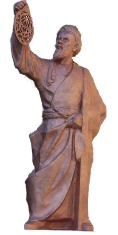
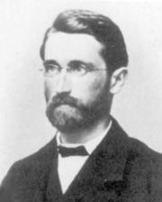

| Choisissez votre langue ! | Choose your language ! |
On commence par remarquer que certaines équations ne possèdent pas de solution dans les ensembles de nombres que nous connaissons.
Nous construisons ensuite par des opérations ensemblistes légales un nouvel ensemble qui sera une 'extension' d'un ensemble existant au sens suivant:
- Le nouvel ensemble sera muni des mêmes opérations que l'ensemble existant.
- Elles posséderont les mêmes propriétés (plus éventuellement d'autres).
- Il sera possible de construire un de l'ancien ensemble vers le nouveau permettant d'identifier tous les éléments de l'ancien ensemble avec certains éléments du nouvel ensemble. Cette identification nous conduira à certains abus de notations.
- Les équations constituant le point de départ de notre travail seront résolubles dans le nouvel ensemble.
Parfois les procédés de construction sont très voisins les uns des autres, parfois ils sont totalement différents. On verra ainsi que les constructions de ℤ à partir de ℕ et de ℚ à partir de ℤ sont très proches, que la construction de ℝ à partir de ℚ est totalement différente des deux premières, et qu'enfin la construction de ℂ à partir de ℝ s'apparente plutôt aux deux premières. Nous verrons que les nouveaux ensembles présentent par rapport aux anciens des sauts ' qualitatifs' (on peut y faire plus de choses) et que parfois il présentent aussi des sauts ' quantitatifs' du point de vue de la théorie des (ils ont vraiment beaucoup plus d'éléments).
Nous nous intéressons maintenant dans ce chapitre uniquement à la construction de ℤ à partir de ℕ.
Les équations que nous cherchons à résoudre sont celles de la forme:
x+a=b où a et b désignent des naturels donnés et où x désigne l'inconnue dans ℕ .
Certaines de ces équations possèdent une solution, par exemple si a=3 et b=5, x=2 convient.
D'autres équations de ce type ne possèdent aucune solution, par exemple si a=5 et b=3, le membre de gauche sera toujours ≥ 5 donc ne pourra être égal à 3. C'est parce que (ℕ, +) n'est pas un groupe. Nous construirons donc ℤ comme un contenant ℕ comme sous-ensemble .
Par ailleurs ℕ convient pour dénombrer des ensembles pour compter des éléments, mais il ne convient pas pour noter des quantités relatives comme la position d'un compte bancaire qui peut être créditeur ou débiteur, une température Celsius qui peut être en dessous ou au dessus d'un point défini comme 0 pour une certaine propriété physique.
En Orient, les entiers relatifs sont connus et utilisés depuis fort longtemps, en Inde, en Perse et dans le monde Arabe. En occident ils s'imposent beaucoup plus tard et encore avec grande difficulté, des mathématiciens de renom comme d'Alembert sont fort soupçonneux quand à leur réelle utilité. C'est finalement Richard Dedekind, qui fort tardivement signe l'acte de naissance officiel de l'ensemble ℤ.
La galerie des portraits
We begin by noticing that some equations do not have solution in the sets of numbers we know.
We then construct by legal set operations a new set which will be an 'extension' of an existing set in the sense following:
- The new set will have the same operations as the existing set.
- They will have the same properties (plus possibly others).
- It will be possible to build an of the old set into the new one allowing to identify all the elements of the old set with some elements of the new one. This identification will lead us to certain abuses of notations.
- The equations constituting the starting point of our work will have solutions in the new set.
Sometimes the construction methods are very close to each other, sometimes they are totally different. We will thus see that the constructions of ℤ from ℕ and of ℚ from ℤ are very similar, that the construction of ℝ from ℚ is totally different from both first ones, and that finally the construction of ℂ from ℝ rather resembles the first two. We see that the new sets present in relation to the old ones jumps' qualitative' (we can do more things there) and that sometimes it also presents jumps ' quantitative' from the point of view of theory of (they really have a lot more items).
We are now interested in this chapter only in the construction of ℤ from ℕ.
The equations we seek to solve are those of the form:
x+a=b where a and b denote given natural numbers and where x denotes the unknown in ℕ .
Some of these equations have a solution, for example if a=3 and b=5, x=2 is fine.
Other equations of this type have no solution, for example if a=5 and b=3, the left member will always be ≥ 5 so cannot be equal to 3. This is because (ℕ, +) is not a group. So we will build ℤ as an containing ℕ as a subset.
Moreover ℕ is suitable for counting sets, for counting elements, but it is not suitable for noting relative quantities like positions of a bank account which may be in credit or in debit, a Celsius temperature which can be below or above a point defined as 0 for some physical property.
In the East, integers have been known and used for a long time. a long time, in India, in Persia and in the Arab world. In the West they impose themselves much later and still with great difficulty, renowned mathematicians like d'Alembert are very suspicious as to their real usefulness. It is finally Richard Dedekind, who very lately signs the official birth certificate of the set of integers ℤ ( Z is for German 'Zahlen').
The gallery of portraits
|  |

|
 | |
| Abu Abudllah Muhammad bin Musa al-Khwarizmi (783/850-IRK) | Simon Stevin (1548/1620-NL) | Jean Le Rond d'Alembert (1717/1783-FR) | Richard Dedekind (1831/1916-DE) |
|
Création Gilles Dubois
Created by Gilles Dubois
|
Janvier 2022
January 2022
|
Version mobile Jquery
Mobile Jquery version
|